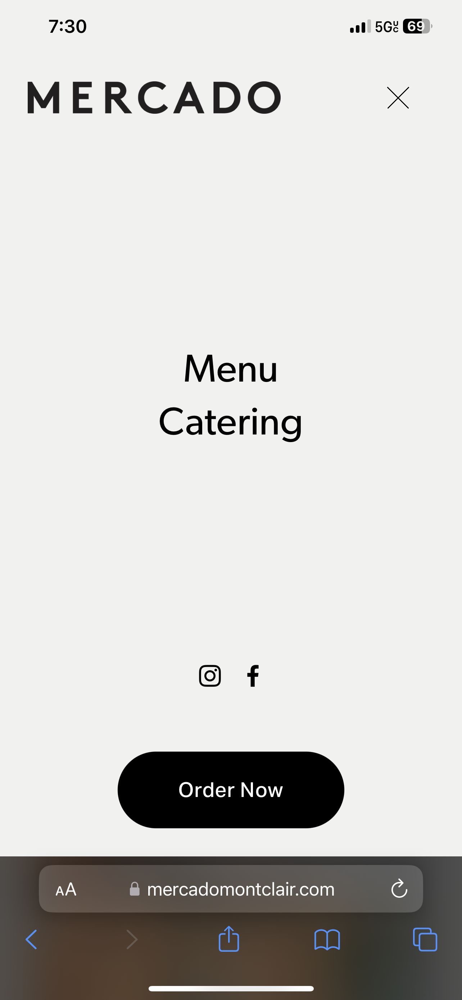
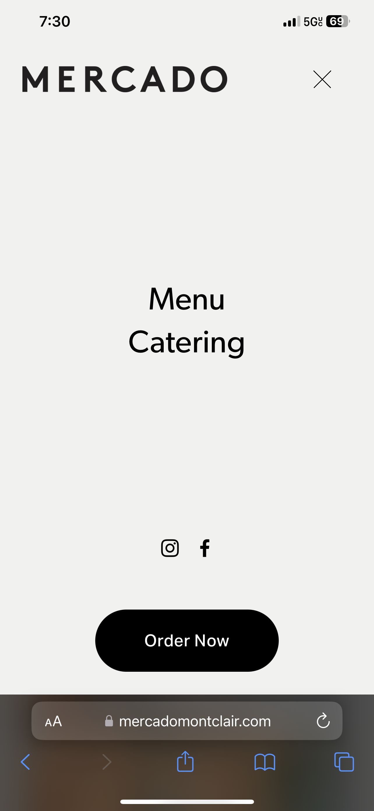

Website Critique
by Zoe Silva
This is the first and only real website I ever designed back in 2021. The website is for my dad's restaurant business, Mercado. It serves as a place for Mercado to showcase their products and services, to get inquiries, as well as highlight important information, including the menu, location, and hours of operation. In addition to informing customers about the restaurant and advertising its products, the website also aims to provide a means for online purchase. Clicking on the "Order Now" button automatically directs customers to the third party website which enables them to order food or drinks directly from their smartphone or computer.
The homepage of the website effectively guides visitors to explore the site further or take specific actions, such as viewing the menu or placing an online order. Key elements such as navigation menus, call-to-action buttons, and contact information are readily accessible and intuitive to use. Clear and concise labeling, along with strategically placed links and buttons, allow visitors to easily find what they're looking for and navigate the site with ease. The website’s simple design emphasizes clarity and simplicity in navigation, which can enhance the user experience by reducing clutter and cognitive load.
The website employs a visual hierarchy to guide users' attention and prioritize information effectively through elements such as size, color, contrast, and placement. For example, key information like the restaurant's name is displayed prominently in a larger font size or bolder weight to immediately capture the viewer's attention. Menu items and calls to action are presented in a consistent format, with clear differentiation between headings, subheadings, and body text. White space is also utilized strategically to create separation and emphasize important elements.
The website demonstrates consistency in colors, fonts, and layouts, maintaining a cohesive and harmonious design. The color palette is limited to black and white, the white background with black text allows the content and images on the page to act as pops of color, pulling the viewer in. The page utilizes only one font, Gibson. It is simple and easy to read, with a focus on clarity and elegance. Although I might be biased since it is my favorite font. The layouts are clean and uncluttered, with ample white space to allow elements to breathe and create a sense of balance. Consistency in these design elements reinforces the minimalist aesthetic and enhances the overall user experience.
 

The content on mercadomontclair.com aligns well with the site's purpose of showcasing a minimalist restaurant experience. The website focuses on delivering essential information to visitors without unnecessary clutter. The homepage features clear navigation options, concise descriptions of the restaurant's concept and menu offerings, and practical details such as location, hours of operation, and contact information. However, while the minimalist approach is consistent with the restaurant's branding, there may be missed opportunities to provide additional content that could enhance the user experience. For example, including a section on the sourcing of ingredients could add depth to the restaurant's story and appeal to conscientious diners seeking transparency and authenticity.
The website utilizes images and media sparingly, in line with its minimalist approach. The images featured on the website are carefully selected to complement the restaurant's aesthetic and convey its ambiance. High-quality photographs of the restaurant's interior, dishes, and ingredients are visually appealing and provide a glimpse into the dining experience. I like the idea of the image carousel being used to display a variety of menu items, however, there may be room for improvement in terms of the quantity and variety of media content. Including additional images of the menu items, behind-the-scenes moments in the kitchen, or customer testimonials could further engage visitors and give them a more comprehensive understanding of what the restaurant has to offer.
The text is presented in a clean and legible manner, contributing to the minimalist aesthetic of the website. The font choice is simple yet elegant, and the contrast between text and background ensures readability. Paragraphs are brief and well-organized, making it easy for visitors to scan the content and find the information they need.
I must admit, it's quite embarrassing to realize that, despite being the designer of this website, I had never taken the time to review it on a mobile device until now, prompted by this assignment. To my surprise, I discovered that the website design lacks responsiveness on smartphones. Given that I developed this page using Squarespace, I had assumed it would inherently adapt to various screen sizes.
Upon loading the website on my phone, I noticed that the first two images were stacked on top of each other. While this arrangement isn't inherently problematic, it does result in a considerable amount of white space at the top of the page. My primary concern arose when I scrolled past the menu items and encountered an excessive amount of white space before reaching the call-to-action button. The abundance of space creates a stark white void as one scrolls, potentially leading viewers to believe they've reached the end of the website prematurely.
This presents a significant issue, as vital information such as the restaurant's address, hours of operation, phone number, and email address have yet to be displayed on the page. Ensuring that this crucial information is readily accessible to users, especially on mobile devices, is imperative for providing a seamless and informative browsing experience.
This presents a significant issue, as vital information such as the restaurant's address, hours of operation, phone number, and email address have yet to be displayed on the page. Ensuring that this crucial information is readily accessible to users, especially on mobile devices, is imperative for providing a seamless and informative browsing experience.
Despite the spacing issue encountered on the website when it's displayed on a mobile screen, the navigation menu perseveres as a beacon of clarity and accessibility. Positioned prominently, it acts as a steadfast guide for users navigating through the site's content, regardless of the surrounding white space. Its unyielding presence at the top of the page ensures that users can easily locate and interact with it, even amidst the visual imbalance caused by excessive whitespace. This unwavering accessibility is particularly crucial on mobile devices, where screen real estate is limited, and users rely heavily on intuitive navigation to navigate the site efficiently.